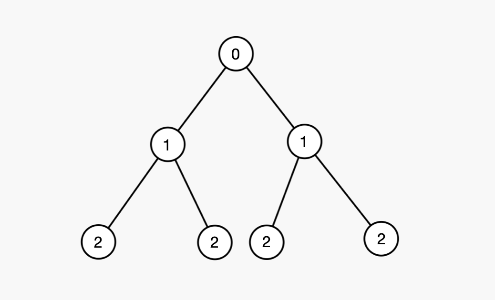

[Algorithm] BFS
▶️ BFS (너비 우선 탐색)
BFS는 너비 우선 탐색으로 큐를 이용해서 간단하게 구현할 수 있다
기본적인 틀은 다음과 같다
const BFS = () =>{
// 큐 생성 (FIFO)
let queue=[];
// 기본셋팅
queue.push(1);
while(queue.length){
// 진행할 노드
let temp = queue.shift();
for(이후 진행노드에 대해){
queue.push(이후 진행할 노드);
}
}
}

다음과 같은 사진이 있을때 DFS는 왼쪽의 자식을 계속해서 깊이(아래로) 먼저 진행하는 방식이라면 BFS는 레벨(0, 1, 2)를 기준으로 동작하는 것처럼 보인다
맨 위의 루트노드부터 아래층의 1을 가진 노드, 이후 2를 가진 노드 순서대로 같은 층(레벨)에 존재하는 노드들을 탐색한다
따라서 선입선출인 큐를 이용해서 shift(), pop()을 사용하면 순차적으로 노드 탐색을 할 수 있다
▷ BFS문제
만약 보드게임을 진행하는데 각 칸에는 숫자가 적혀있고, 1칸부터 적혀있는 숫자까지 이동할 수 있으며 끝점에 다다르면 승리하는 게임이다 이 게임을 승리하기 위한 최소의 이동횟수를 구하라(입력은 1차원 숫자 배열)
const solve = (nums) => {
let result = 0;
// BFS를 위한 큐역할을 하는 배열
const queue = [];
// 목적지
const goal = nums.length - 1;
const BFS = () => {
// 기본셋팅
queue.push(0);
let L = 0;
while(queue.length > 0){
let len = queue.length;
for(let i = 0; i < len; i++){
let x = queue.shift();
for(let j = 1; j <= nums[x]; j++){
// 다음 노드로 진행하기 전에 검사하고 1을 더해서 반환
if(x+j === goal) return L + 1;
if(x+j <= goal) queue.push(x+j);
}
}
L++;
}
}
result = BFS();
return result === undefined ? -1 : result;
}
console.log(solve([2, 2, 0, 2, 1, 1]))
3
- 큐역할을 하는 배열을 생성한다
- BFS 함수 내에서
whlie문을 통해 진행할 노드가 있을때까지 반복한다 shift()로 큐에 있는 노드를 빼서 검사한다- 조건에 맞으면
return을 통해 값을 반환한다